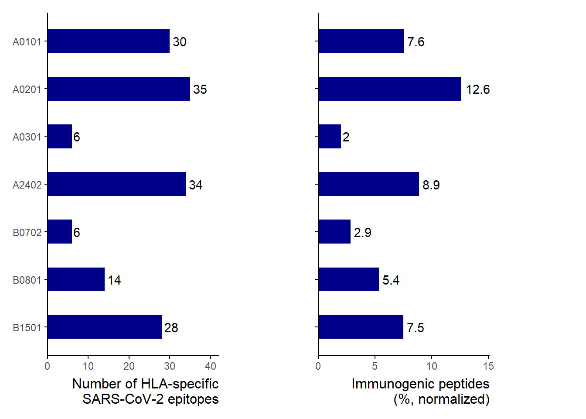
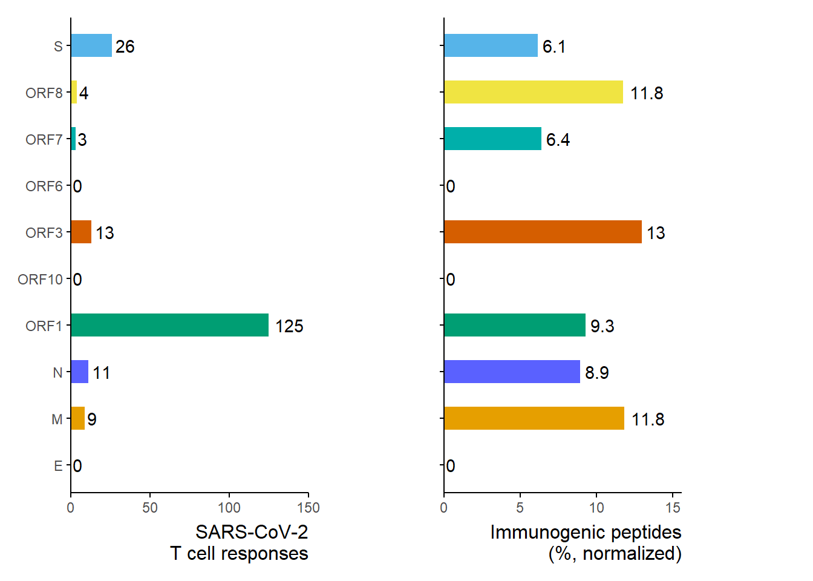
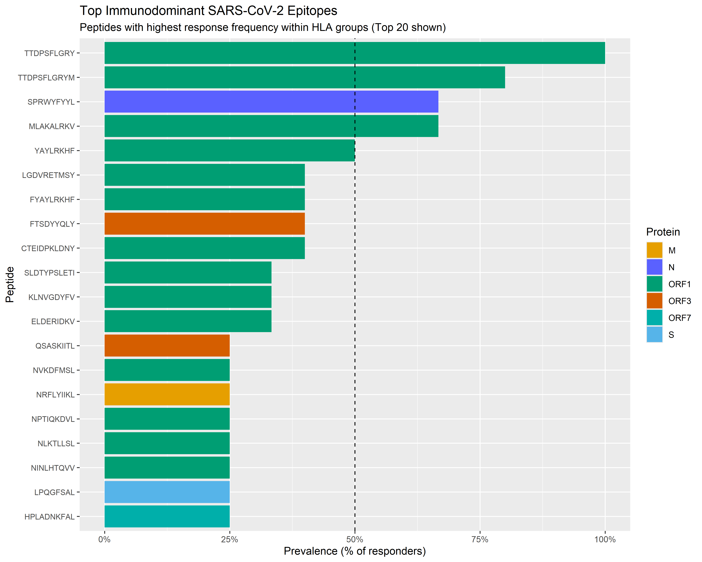

# Load libraries -----------------------------------------------------------
library(readxl) # reading Excel files
library(tidyverse) # tidy data tools including write_tsv()
library(here) # reproducible file paths
library(purrr) # functional programming: map(), imap()Full Data Processing Pipeline
Script: 00_all.qmd
This documents executes the full workflow, including data loading, cleaning, augmentation and analysis.
1. Load Data
Script: 01_load.qmd
Purpose: Load raw Excel data (multiple sheets) and export each sheet as an individual TSV file.
Why: Converting each sheet into its own flat text file makes downstream wrangling easier, more modular, and reproducible.
# Load Excel file ----------------------------------------------------------
# Dynamically build path so the script works on any machine
raw_file_path <- here("data", "_raw", "AP_cohort_COVID_1_raw.xlsx")
# Retrieve all sheet names
sheet_names <- excel_sheets(raw_file_path)
# Read each sheet as a tibble and store them in a named list
sheet_list <- map(sheet_names, ~ read_xlsx(raw_file_path, sheet = .x))
names(sheet_list) <- sheet_names# Export sheets to TSV files -----------------------------------------------
# Create output directory (if it doesn’t exist yet)
out_dir <- here("data", "sheets_tsv")
dir.create(out_dir, showWarnings = FALSE)
# Loop over each sheet and write to a TSV file
sheet_list|>
imap(
~write_tsv(.x, str_c(out_dir, "/", .y, ".tsv")))2. Clean Data
Script: 02_clean.qmd
Purpose: Combine per-sheet TSV files, clean and tidy the data, and create the key variables for analysis.
Why: We want a single, tidy table that is easy to use in downstream analyses and visualisations.
Input: TSV files in data/sheets_tsv/(one per sheet).
Output: 02_dat_clean.tsv (clean, combined dataset).
# Load packages ------------------------------------------------------------
library(tidyverse) # data wrangling, string handling, etc.
library(here) # reproducible file paths# Load project helper functions -----------------------------------
source("99_proj_func.R") # load_tsvData(), save_tsvData(), etc.Create a combined tsv
# Define data folder and list patient files --------------------------------
tsv_folder <- here("data", "sheets_tsv")
patient_files <- list.files(
path = tsv_folder
)
# Define correct spec for column which raised error ------------------------
col_spec <- cols(
`-log10(masked_p)` = col_double()
)
# Load and combine all patient TSVs into one data frame --------------------
combined_data <- patient_files |>
map_dfr(
~load_tsvData(
filename = .x,
folder = tsv_folder,
col_types = col_spec,
na = c("NA", "N/A", "---"),
show_col_types = FALSE
)
)
# Optional: inspect combined data
#combined_dataExtract PE+ Population = Multimer Frequency
# Derive multimer frequency per sample ------------------------------------
# Column ...33 contains the per-row frequency; we:
# 1) rename it for clarity,
# 2) sum per sample (replacing NAs with 0),
# 3) store result in MultimerFrequency.
combined_data <- combined_data |>
group_by(sample) |>
rename(freq = ...33) |>
mutate(
MultimerFrequency = sum(replace_na(freq, 0))
) |>
ungroup()Drop last row per patient
# Remove last / non-data rows per patient ----------------------------------
# Here we drop rows without a barcode, which correspond to summary/empty rows.
combined_data <- combined_data |>
drop_na(barcode)Keep only important columns
# Keep only important columns ----------------------------------------------
clean_data <- combined_data |>
select(
sample,
count.1,
input.1,
input.2,
input.3,
log_fold_change,
p,
HLA,
Protein,
Peptide,
MultimerFrequency
)Extract patient number
# Extract patient ID from sample name --------------------------------------
# Example assumption: "AP0501_xxx" -> patient ID "05"
clean_data <- clean_data |>
mutate(
sampleID = str_remove(sample, "_.*$"), # drop everything after first "_"
sampleID = str_sub(sampleID, start = 3, end = 4) # keep characters 3–4 → "05"
) |>
relocate(sampleID, .before = sample)Clean HLA name
# Clean HLA field -----------------------------------------------------------
# Remove the "HLA-" prefix so only the allele remains (e.g., "A02:01").
clean_data <- clean_data |>
mutate(
HLA = str_remove(HLA, "HLA-")
)Extract gene
# Extract gene / protein information ---------------------------------------
# Protein column structure is something like:
# genome_weird1_Protein_extra
# We keep only the Protein part and drop helper pieces.
clean_data <- clean_data |>
separate_wider_delim(
Protein,
delim = "_",
names= c("genome", "weird1", "Protein", "extra"),
too_few ="align_start"
)|>
select(-weird1, -extra, -genome
)|>
mutate( Protein = str_replace(Protein, "ORF1", "ORF10"),
Protein = str_replace(Protein, "orf1", "ORF1")) #fix orf1 typo
# Optional: inspect clean data
#clean_dataSave cleaned data as TSV
# Save cleaned data as TSV -------------------------------------------------
save_tsvData(clean_data, "02_data_clean.tsv")[1] "Data saved"3. Augment Data
Script: 03_augment.qmd
Purpose: Add derived variables (e.g. HLA–peptide combo, response flag, estimated frequencies) on top of the cleaned dataset.
Why: These features are needed for downstream immunological interpretation and analyses.
Input: 02_dat_clean.tsv
Output: 03_dat_aug.tsv
# Load libraries ------------------------------------------------------------
library(tidyverse) # data wrangling, summaries, etc.
library(here) # reproducible file paths# Load helper functions -----------------------------------------------------
source("99_proj_func.R")# Load cleaned data ------------------------------------------------------------
clean_data <- load_tsvData("02_data_clean.tsv", show_col_types = FALSE)Create new columns
HLA-peptides (HLA-peptide combination)
# Create HLA–peptide combination -------------------------------------------
# Combine HLA and peptide into a single identifier.
# Example: "A02:01" + "YLQPRTFLL" -> "A02:01-YLQPRTFLL"
aug_data <- clean_data |>
mutate(
'HLA-peptide' = str_c(HLA, Peptide, sep = "-")
)Identify response by log_fold_change and p-value
# Define response based on logFC and p-value --------------------------------
# Response if:
# - log_fold_change >= 2.0
# - p < 0.05
aug_data <- aug_data |>
mutate(
response = if_else(
log_fold_change >= 2.0 & p < 0.05,
1L,
0L
)
)Estimated frequency
- count.1 / (sum of count.1 for Responses) * multimer Frequency
# Estimate peptide frequency per sample -------------------------------------
aug_data <- aug_data |>
group_by(sample) |>
mutate(
response_count = sum(count.1 * response)
) |>
ungroup() |>
mutate(
estimated_frequency = case_when(
response_count == 0 ~ 0,
response == 1 ~ (count.1 / response_count) * MultimerFrequency,
TRUE ~ 0
)
)Total estimated frequency
# Check total estimated frequency per sample --------------------------------
# For QC: total_estimated_frequency per sample should align with
# MultimerFrequency (up to rounding / numerical differences).
aug_data <- aug_data |>
group_by(sample) |>
mutate(
total_estimated_frequency = sum(estimated_frequency)
) |>
ungroup()
# Optional: inspect augmented data
#aug_dataSave augmented data as TSV
# Save augmented data -------------------------------------------------------
save_tsvData(aug_data, "03_data_aug.tsv")[1] "Data saved"4. Analysis
Script: 04_analysis.qmd
Purpose: Analyse the how the peptides are distributed over HLA, Protein and patients
Input: 03_dat_aug.tsv
# Load libraries ------------------------------------------------------------
library("here")
library("tidyverse")
library("patchwork")# Load helper functions -----------------------------------------------------
source("99_proj_func.R")# Load augmented data -----------------------------------------------------
experiment_data <- load_tsvData("03_data_aug.tsv", show_col_types = FALSE)Manhattan plot: Immunogenic peptides, sorted by HLAs
protein_colors <- c(
"ORF1" = "#009E73",
"S" = "#56B4E9",
"ORF3"= "#D55E00",
"ORF6" = "#CC79A7",
"ORF7" = "#00AFAA",
"ORF8" = "#F0E442",
"ORF10" = "#0099BB",
"E" = "#0072B2",
"M" = "#E69F00",
"N" = "#5A61FF"
)
manhattan_HLA <- experiment_data |>
mutate(
point_color = if_else(response == 0, "grey",protein_colors [Protein]),
point_fill = if_else(response == 0, "grey", protein_colors [Protein]),
HLA = factor(HLA, levels = c("A01:01","A02:01","A03:01","A24:02", "B07:02", "B08:01", "B15:01")))
manhattan_HLA |>
ggplot(aes(
x = `HLA-peptide`,
y = log_fold_change,
colour = point_color,
fill = point_fill,
size = estimated_frequency
)) +
geom_point() +
facet_grid(~ HLA, scales = "free_x", space = "free") +
geom_hline(yintercept = 2, linetype = "dashed") +
scale_color_identity(guide = "none") +
scale_fill_identity(guide = "none") +
scale_y_continuous(limits = c(0, NA), breaks = seq(0, 14, by = 2)) +
#scale_y_break(breaks = c(0, 2)) +
theme(
panel.spacing = unit(0, "lines"),
panel.border = element_rect(colour = "grey", fill = NA, size = 0.3),
strip.text = element_text(angle = 90, hjust = 0.5, size = 10, face = "bold"),
legend.position = "bottom",
axis.text.y.right = element_blank(),
axis.ticks.y.right = element_blank(),
strip.background = element_blank(),
axis.text.x = element_blank(),
axis.text.y.left = element_text(size = 12),
title = element_text(size = 14),
legend.title = element_text(size = 10)
) +
labs(title = "Manhattan plot of T cell responses against SARS-CoV-2 antigens, sorted by HLA",
x = "Peptide HLA pairs",
y = "Log fold change",
size = "Estimated frequency"
) 
In this plot, we can appreciate the distribution of immunogenic peptides across different HLAs, by displaying the estimated frequency of each peptide-HLA pair in the patient cohort.
Summary bar plot: Peptides distribution across HLAs
#how many peptides per HLA for positive T-responses
summary_HLA <-
experiment_data|>
mutate(HLA = str_remove(HLA, ":"))|>
filter(response ==1)|>
group_by(HLA)|>
summarize(peptidesPerHLA = n_distinct(Peptide))|>
ungroup()|>
#order HLA descending + fixes appearance for plotting
arrange(desc(HLA)) |>
mutate(HLA = fct_inorder(HLA))
#compute all peptides per HLA independent of positive/negative T-responses
totalPeptidesPerHLA <- experiment_data|>
group_by(HLA)|>
summarize(totalPeptidesPerHLA = n_distinct(Peptide)) |>
arrange(desc(HLA)) |>
#also need the same order for combining correct values
mutate(HLA = fct_inorder(HLA)) |>
pull(totalPeptidesPerHLA)
pl1 <- summary_HLA |>
ggplot(
aes(x= peptidesPerHLA,
y = HLA)
) +
geom_col(aes(width = 0.5),
fill = "darkblue")+
geom_text(aes(label = peptidesPerHLA), hjust = -0.2)+
scale_x_continuous(expand = expansion(mult = c(0,.2)))+
labs(caption = "Number of HLA-specific\nSARS-CoV-2 epitopes")+
theme(aspect.ratio = 2/1,
axis.title.x = element_blank(),
axis.title.y = element_blank(),
axis.ticks = element_line(color = "black"),
axis.line = element_line(color = "black"),
panel.background = element_rect(fill = "white"),
plot.caption = element_text(size = 12)
)
pl2 <- summary_HLA |>
mutate(
percentage_peptides = peptidesPerHLA/totalPeptidesPerHLA * 100
)|>
ggplot(
aes(x= percentage_peptides,
y = HLA)
) +
geom_col(aes(width = 0.5),
fill = "darkblue")+
geom_text(aes(label = round(percentage_peptides, digits = 1)),
hjust = -0.2)+
scale_x_continuous(expand = expansion(mult = c(0,.2)))+
labs(caption = "Immunogenic peptides\n (%, normalized)")+
theme(aspect.ratio = 2/1,
axis.title.x = element_blank(),
axis.title.y = element_blank(),
axis.text.y = element_blank(),
axis.ticks = element_line(color = "black"),
axis.line = element_line(color = "black"),
panel.background = element_rect(fill = "white"),
plot.caption = element_text(size = 12)
)
combined_HLAs <- pl1 | pl2 +
plot_layout(widths = c())
combined_HLAs
The plot compares, for each HLA, the total number of distinct SARS-CoV-2 peptides that had a positive T-cell response. The right panel shows the percentage of immunogenic peptides normalized to the total peptide number of each HLA.
This highlights the absolute and relative immunogenicity of different HLA types.
Manhattan plot: Immunogenic peptides, sorted by protein of origin
manhattan_protein <- experiment_data |>
mutate(
point_color = if_else(response == 0, "grey",protein_colors [Protein]),
point_fill = if_else(response == 0, "grey", protein_colors [Protein]),
Protein = factor(Protein, levels = c("ORF1","S","ORF3","N", "M", "ORF8", "ORF7", "ORF6","ORF10", "E")))
manhattan_protein |>
ggplot(aes(
x = `HLA-peptide`,
y = log_fold_change,
colour = point_color,
fill = point_fill,
size = estimated_frequency
)) +
geom_point() +
facet_grid(~ Protein, scales = "free_x", space = "free") +
geom_hline(yintercept = 2, linetype = "dashed") +
scale_color_identity(guide = "none") +
scale_fill_identity(guide = "none") +
scale_y_continuous(limits = c(0, NA), breaks = seq(0, 14, by = 2)) +
#scale_y_break(breaks = c(0, 2)) +
theme(
panel.spacing = unit(0, "lines"),
panel.border = element_rect(colour = "grey", fill = NA, size = 0.3),
strip.text = element_text(angle = 90, hjust = 0.5, size = 10, face = "bold"),
legend.position = "bottom",
axis.text.y.right = element_blank(),
axis.ticks.y.right = element_blank(),
strip.background = element_blank(),
axis.text.x = element_blank(),
axis.text.y.left = element_text(size = 12),
title = element_text(size = 14),
legend.title = element_text(size = 10)
) +
labs(title = "Manhattan plot of T cell responses against SARS-CoV-2 peptides across patients, by protein",
x = "Peptide HLA pairs",
y = "Log fold change",
size = "Estimated frequency"
) 
This plot gives an overview of how immunogenic peptides are spread across various proteins of origin, keeping into account their estimated frequency in the patient cohort.
Summary bar plot: peptides distribution across protein of origin
summary_protein <- experiment_data|>
group_by(Protein)|>
summarize(total = n_distinct(`HLA-peptide`),
number_Tcells = sum(response == 1))
pl1 <- summary_protein |>
ggplot(
aes(x = number_Tcells,
y = Protein,
fill = Protein)
)+
geom_col(aes(width = 0.5))+
scale_fill_manual(values = protein_colors) +
geom_text(aes(label = number_Tcells),hjust = -0.2)+
scale_x_continuous(expand = expansion(mult = c(0,.2)))+
labs(caption = "SARS-CoV-2\nT cell responses")+
theme(aspect.ratio = 2/1,
axis.title.x = element_blank(),
axis.title.y = element_blank(),
axis.ticks = element_line(color = "black"),
axis.line = element_line(color = "black"),
panel.background = element_rect(fill = "white"),
plot.caption = element_text(size = 12),
legend.position = "none"
)
pl2 <- summary_protein |>
mutate(
percentage_peptides = number_Tcells/total * 100
)|>
ggplot(
aes(x = percentage_peptides,
y = Protein,
fill = Protein)
)+
geom_col(aes(width = 0.5))+
scale_fill_manual(values = protein_colors) +
geom_text(aes(label = round(percentage_peptides, digits = 1)),hjust = -0.2)+
scale_x_continuous(expand = expansion(mult = c(0,.2)))+
labs(caption = "Immunogenic peptides\n(%, normalized)")+
theme(aspect.ratio = 2/1,
axis.title.x = element_blank(),
axis.title.y = element_blank(),
axis.text.y = element_blank(),
axis.ticks = element_line(color = "black"),
axis.line = element_line(color = "black"),
panel.background = element_rect(fill = "white"),
plot.caption = element_text(size = 12),
legend.position = "none"
)
combined_protein <- pl1 | pl2 +
plot_layout(widths = c())
combined_protein
The plot compares, for each SARS-CoV-2 protein, the total number of HLA-peptide combination that resulted in a positive T-cell response. The right panel shows the percentage of immunogenic peptides relative to all detected peptides of that protein.
This highlights the absolute and relative immunogenicity of different proteins.
Patient-based distributions of peptides across proteins of origin
It is interesting to assess how different genes from SARS-CoV-2 genome contribute in generating immunogenic epitopes, for each patient in the cohort. To do this, we will plot the total frequency of T cell responses for each patient, distributed across the whole genome.
patient_protein <- experiment_data |>
mutate(estimated_frequency = estimated_frequency*100, #converts into percentage
total_estimated_frequency = total_estimated_frequency*100,
sampleID = fct_reorder(sampleID, total_estimated_frequency)) |>
arrange(desc(total_estimated_frequency))
patient_protein|>
ggplot(aes(x = estimated_frequency,
y = sampleID,
fill = Protein)) +
geom_col( position = "stack") +
scale_fill_manual(values = protein_colors) +
scale_x_continuous(breaks= c(0, 5, 10, 15, 20, 25)) +
labs( x = "SARS-CoV-2 reactive CD8 T cells (%)",
y = "Samples",
title = "Frequency of SARS-CoV-2 reactive CD8 T cells in patients with COVID19, distributed across protein of origin")
As shown here, for most samples, the majority of reactive T cells recognize antigens derived from ORF1. Taking into account the size of the genes, hence the amount of peptides that can be generated, it is reasonable to witness a bigger response against bigger genes (such as ORF1).
Identifying immunodominant peptides
At last, we are interested in identifying which peptides are conserved across patients, keeping in mind the restrictions guided by HLA haplotypes. We will define immunodominant, those peptide-HLA for which a T cell population was identified in >= 50 % of the patients carrying given HLA.
Concept of Immunodominance
Immunodominance refers to the phenomenon where the immune system focuses its response on a small fraction of the available viral peptides. Even though SARS-CoV-2 has thousands of potential epitopes, only a select few trigger a strong T-cell response in the majority of patients.
Identifying these “immunodominant” epitopes is crucial for vaccine design, as a good vaccine must include these key targets to ensure broad protection across the population (especially considering different HLA types).
Visualization
The bar plot below shows the Prevalence of the top immunodominant peptides within their respective HLA groups.
# --- Calculation ---
# 1. Calculate Prevalence per HLA
hla_counts <- experiment_data |>
distinct(sampleID, HLA) |>
count(HLA, name = "n_patients")
valid_hlas <- hla_counts |>
filter(n_patients >= 3) |>
pull(HLA)
prevalence_data <- experiment_data |>
filter(HLA %in% valid_hlas) |>
group_by(HLA, Peptide, Protein) |>
summarise(
total_tested = n_distinct(sampleID),
responders = sum(response),
prevalence = responders / total_tested,
.groups = "drop"
) |>
filter(prevalence > 0)
# 2. Filter for TOP immunodominant peptides
top_peptides <- prevalence_data |>
arrange(desc(prevalence)) |>
slice_head(n = 20) # Take top 20 strongest responses
# 3. Barplot
ggplot(top_peptides, aes(x = prevalence, y = reorder(Peptide, prevalence), fill = Protein)) +
geom_col() +
scale_fill_manual(values = protein_colors) +
geom_vline(xintercept = 0.5, linetype = 2) +
scale_x_continuous(labels = scales::percent, expand = c(0, 0.05)) +
labs(
title = "Top Immunodominant SARS-CoV-2 Epitopes",
subtitle = "Peptides with highest response frequency within HLA groups (Top 20 shown)",
x = "Prevalence (% of responders)",
y = "Peptide",
fill = "Protein"
) +
theme(
legend.position = "right",
axis.text.y = element_text(size = 8)
)